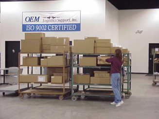

|


    

|
Warehousing
OEM
will provide
a forward-stocking
location. Suppliers
can ship finished
goods to OEM
Logistics and the
product will be
warehoused and
shipped to the
end-user customer
when the need dates arrive.
- OEM will hold buffer inventory for many of our customer's suppliers. This
gives the customer visibility to supplier inventory levels without impacting
inventory costs and helps support on-time delivery.
 OEM
provides warehousing and inventory management either at our customer’s
facility or at OEM’s location.
- Many products that are considered "pass-through"
outside-purchase (OP) are also received, inventoried, and shipped by OEM.
Pass-through hardware is considered anything that requires no further
processing after receipt, can be visually inspected, and shipped to meet
the end-user's need date.
Aerospace Logistics, Quality and Assurance
ISO9002 Certified
|